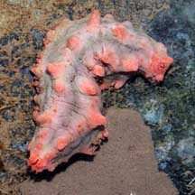
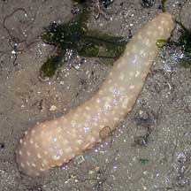
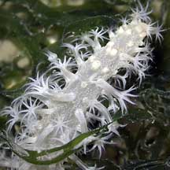

|
|
| Sausage-like
animals How to tell them apart? updated Apr 2020 Many sausage-like animals are seen on our shores, especially at low tide when they are out of water. They can look very different when they are submerged. Here's more on how to tell them apart. |
|
 |
 |
 |
|
Sea
cucumbers
Phylum Echinodermata |
Sea
pen
Phylum Cnidaria |
Peacock
anemone
Phylum Cnidaria |
| Sea cucumbers are often sausage shaped. Some have bumps and other texture on the body. Others may be smooth. | The
flowery sea pen looks like a sausage when out of water with all the polyps retracted. |
Peacock
anemones have a long columnar body that slides into a soft tube. |
 |
 |
 |
| When submerged, feathery feeding tentacles may appear at the mouth. | When
submerged, the flower-like polyps emerge all along the length of the colony. |
When
submerged, the long tentacles are extended into the water. |
| More comparisons |


| How to tell apart worm-like animals. |